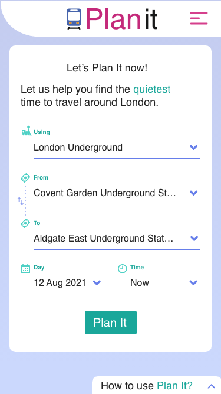
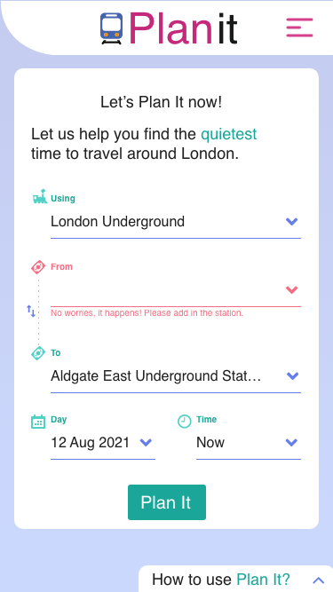
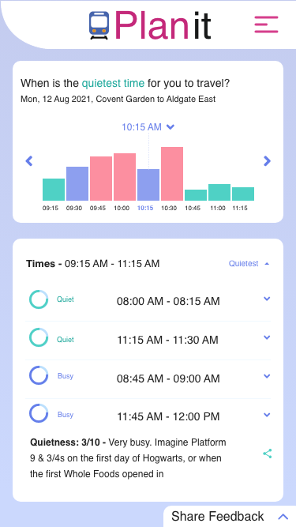
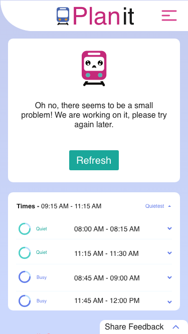
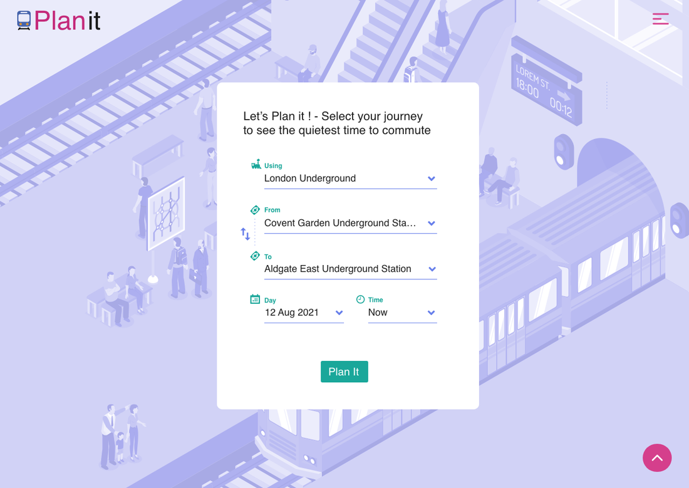

Consumer · PlanIt · London · 2021 · Designer & strategist
When the reason people won’t act is emotional, the interface is where you pay it — not the model.
The stakes: a correct prediction that changed nobody’s behaviour.
A London commute is not measured only in minutes. It is measured in elevated heart rates, tense shoulders, and the dread of being pressed into a full carriage. By 2021 the app landscape answered one question with real precision — what is the fastest route? — and ignored the one people actually asked at the platform edge: will I be able to breathe when I get on?
PlanIt arrived with the capability to answer it. Near-real-time footfall from the Underground and National Rail could say which windows would be quiet. On paper the problem was solved. In practice nothing moved, because the product was asking an anxious person to accept a slower journey on the word of a number. That is a trade only a calm person makes. The people who most needed it — elderly travellers, expecting mothers told to avoid stress, anyone with a stroller, luggage or a mobility need, anyone still wary after a pandemic — were the least likely to be persuaded by a grid of data.
The test: stop designing for a user, start designing for the frightened.
The first move was to narrow the audience deliberately, against instinct. Not commuters in general — the specific people for whom a crowded carriage is not an annoyance but a risk. That reframing decided everything downstream: a product for them could not look like the category. Transit apps speak in tech blue, dense grids and sharp edges, the visual language of a corporate dashboard. To someone already tense, that interface does not read as capable. It reads as one more thing making demands.
So the identity went the other way on purpose: warm primaries, soft accents, generous space, and Prompt for its rounded, legible forms — readable for an eighty-year-old without tipping into hospital signage. The brief was a strange one to write down and the right one: the app should behave less like an instrument and more like a sedative.

Ask
Get it wrongThe mechanism: one number, a British voice, and a train with a face.
A single score, not a data stream. Crowd data collapsed into Quietness, one to ten, so a route could be judged at a glance. Colour reinforced it — green comfortable, amber moderate, red busy — but softened away from neon, because a warning that induces panic defeats a product built to lower it. Large touch targets and tuned contrast were treated as first-class constraints, not an accessibility pass at the end: the same interface had to work for an eighteen-year-old student and an eighty-year-old grandparent.
A voice, instead of a readout. “Footfall density: high” tells an anxious person to brace. The copy went colloquial and distinctly British, trading metrics for pictures they already hold: “Quietness: 3/10 – very busy. Imagine Platform 9¾ on the first day at Hogwarts.” And where the old app would issue an instruction, this one made an offer: “A quieter time is coming up — bring your book, a seat should be waiting for you.”

Suggested trains- The chart answers first. Teal and pink carry the verdict across the whole morning before a single word is read — you can pick a train without parsing anything.
- Windows, not orders. Every row is an offer with a time attached — Quiet, 08:00–08:15 — so the traveller chooses, and the choice stays theirs.
- The number gets a picture. “Quietness: 3/10 – Very busy. Imagine Platform 9¾ on the first day at Hogwarts.” Nobody has to be taught what that means.
A mascot doing real work. The PlanIt train was not decoration. It was the emotional anchor: greeting the traveller, approving a clear route, and visibly feeling bad when something went wrong. A face is a shortcut to a judgement humans make in milliseconds — is this thing on my side? — and the product needed that answer before it could sell a slower journey.
What nobody predicted: they broke it on purpose.
During testing and again in the wild, people deliberately triggered broken flows — entering journeys they knew would fail — to watch the little train be sad about it. The error state, the screen every product team treats as damage control, had become the thing users went looking for.

The screen they went looking for- It owns it in the first person. “Oh no, there seems to be a small problem! We are working on it” — not an error occurred. Somebody is on the other side of this.
- The face carries the apology. A downturned mouth does in a glance what a paragraph of sorry-for-the-inconvenience cannot, and it costs the reader nothing.
- Nothing you had is taken away. The last good answer stays on screen underneath, so the failure is an interruption rather than a loss — and one button puts it right.
A failure state people seek out is a failure state that costs no trust. The moment the product could not deliver — ordinarily where confidence leaks away — became a small act of empathy that made the system more believable, not less. It is the same conviction that runs through the AI work on this site, arrived at from the opposite direction: what a system does when it cannot help is what decides whether anyone believes it when it can.
Falsifiable evidence — small numbers, honestly reported.
Usability: zero usability-related complaints reached customer service in the early launch window, and the product shipped with no tutorial — people from teens to eighty-somethings navigated it unaided. Engagement: the returning behaviour was driven by the voice and the mascot as much as the prediction; the emotional layer behaved as a retention feature rather than decoration. Business: the comfort niche hit its traction goal — 1,000 unique visitors and 250 active users a month. Small, and stated as small: PlanIt never tried to out-Google Google. It owned a territory the speed-optimised apps had written off.

Where the principle breaks — and how it ended.
Warmth cannot rescue a weak signal. Every choice here rests on the footfall prediction being genuinely useful; a mascot on top of bad data is a lie with a face on it. The approach also assumes an emotional cost worth paying to remove — for a purely transactional task, this much personality is friction, not comfort. And charm is not a moat: the affection users had for the train would not have survived a competitor with better data and a warmer product.
The honest ending: PlanIt shipped fast, found a small loyal base, and was deprecated within months. planitnow.co.uk no longer resolves. I would rather show a product that reached real people and was then switched off than pretend everything I have touched is still running — the six-month build and the shutdown are the same skill, which is knowing what a bet is worth before you keep paying for it.